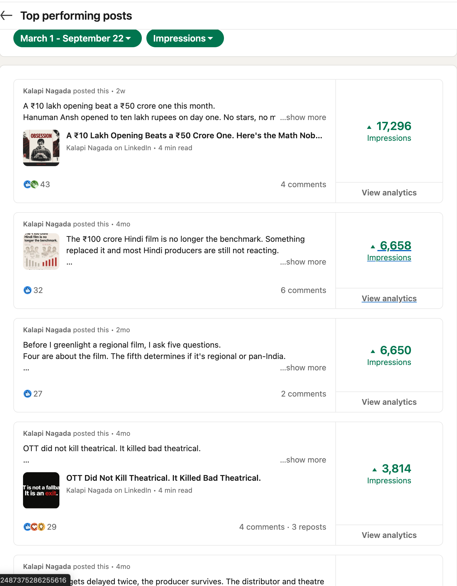

Case 05 · Kalapi LinkedIn
Founder Presence, Not Just a Company Page
Narrative, cadence, and positioning for Kalapi Nagada on LinkedIn, run alongside the corporate channel so the founder voice stays distinct.
Context
A founder channel next to a company channel
Kalapi Nagada is a founder of Cinekorn Entertainment. The personal LinkedIn presence needed to reflect industry positioning without becoming a second company bulletin.
Problem
Company updates are not founder narrative
If the founder feed only repeats announcements, it adds little beyond the corporate page. The gap was a distinct point of view: how the business of entertainment is read from the inside.
Strategy
Separate roles, shared standards
Company page = institutional voice. Founder profile = perspective, pattern recognition, and industry context. Cadence and topic selection were managed so the two feeds reinforced rather than duplicated each other.
Evidence
Profile and performance surface
Founder feed priorities
Editorial themes, not measured percentages
Operating loop
How the founder page was run



Results
A clearer founder lane
The supplied comparison covered 196 days before the operating period and 169 days after it began on 31 March 2026. Total impressions rose from 19,581 to 61,570 and engagements from 176 to 850. Because the windows differ, average daily rates are the fair comparison: impressions rose from about 100 to 364 per day (+265%), and engagements from about 0.90 to 5.03 per day (+460%). Engagement rate moved from 0.90% to 1.38%, a gain of 0.48 percentage points. Followers per day rose from 3.15 to 6.09 (+93%). Thirty-seven of the top 50 posts in the supplied ranking were published after 31 March 2026.
The founder feed carried industry and business framing instead of only company announcements. It sat alongside the corporate page without replacing it.
Takeaway
What this showed
Founder LinkedIn works best when it is treated as a distinct narrative system, not as a mirror of the company page.